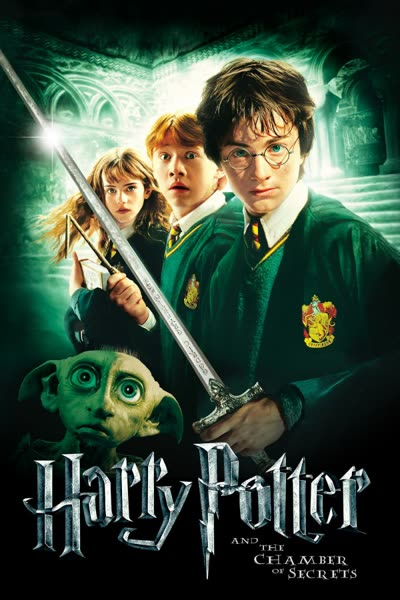

Harry Potter keert terug naar Zweinstein voor zijn tweede jaar. Al snel gebeuren er mysterieuze dingen:
studenten worden versteend en
Harry hoort stemmen die niemand anders hoort.
Samen met Ron en Hermelien ontdekt hij dat een geheime kamer is geopend en dat een monster zich daar schuilhoudt.
De sleutel tot het mysterie ligt bij een oud dagboek van Marten Vilijn.